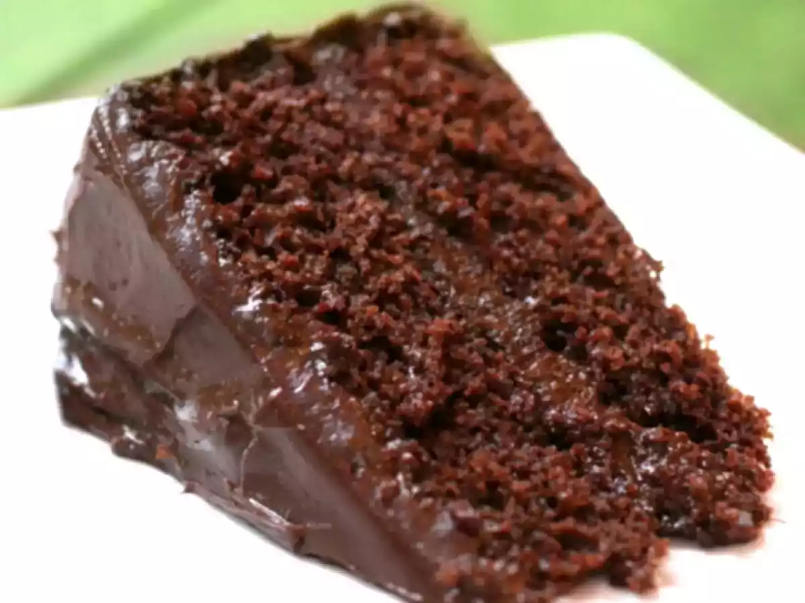
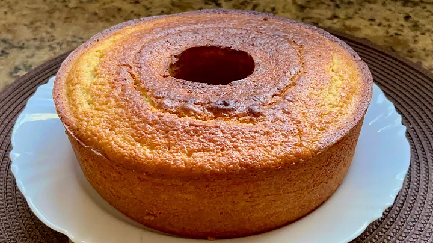

Bolo de chocolate

Receita de um bolo de chocolate simples e fofinho, além de delicioso, é super fácil de fazer!
Ingredientes:
- 2 xícaras de farinha de trigo
- 1 xícara de açúcar
- 1/2 xícara de cacau em pó
- 1 colher de chá de fermento em pó
- 1 xícara de leite
- 1/2 xícara de óleo vegetal
- 2 ovos
Modo de preparo:
- Pré-aqueça o forno a 180°C e unte uma forma de bolo.
- Em uma tigela grande, misture a farinha, o açúcar, o cacau e o fermento.
- Adicione o leite, o óleo e os ovos, e misture até obter uma massa homogênea.
- Despeje a massa na forma preparada e leve ao forno por cerca de 30-35 minutos, ou até que um palito inserido no centro saia limpo.
- Deixe esfriar antes de desenformar e servir.
Bom apetite e não se esqueça de avaliar a receita!
Bolo de laranja

Receita de um bolo de laranja simples, fofinho e delicioso, perfeito para o café da tarde!
Ingredientes:
- 2 xícaras de farinha de trigo
- 1 xícara de açúcar
- 1 colher de sopa de fermento em pó
- 1/2 xícara de óleo vegetal
- 3 ovos
- 1 xícara de suco de laranja natural
- Raspas da casca de 1 laranja
Modo de preparo:
- Pré-aqueça o forno a 180°C e unte uma forma de bolo.
- Em uma tigela grande, misture a farinha, o açúcar e o fermento.
- Adicione o óleo, os ovos, o suco de laranja e as raspas, e misture até obter uma massa homogênea.
- Despeje a massa na forma preparada e leve ao forno por cerca de 30-35 minutos, ou até que um palito inserido no centro saia limpo.
- Deixe esfriar antes de desenformar e servir.
Bom apetite e não se esqueça de avaliar a receita!